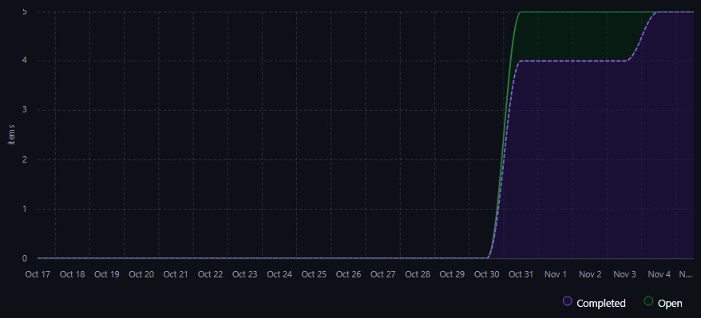

Calendário e Progresso do Projeto
1. Introdução
Esta página foi desenvolvida para acompanhar o desenvolvimento das entregas ao longo do semestre adotada pela equipe Carol Shaw. Seu papel central é monitorar se o escopo definido para cada ciclo de desenvolvimento está sendo entregue dentro do prazo estipulado e avaliar a cadência do avanço das atividades ao longo do tempo.
2. Métrica de Progresso (Taxa de Conclusão de Issues)
Para quantificar a evolução das atividades em cada milestone, adota-se a fórmula de porcentagem de conclusão de issues:
Definição dos Parâmetros:
- Issues Concluídas: Quantidade de issues associadas à milestone que foram finalizadas, revisadas e fechadas após merge na branch principal (
main). - Total de Issues: Quantidade total de tarefas previstas e cadastradas para o escopo da respectiva milestone.
A métrica indica a completude do escopo acordado para a entrega, devendo ser confrontada com a distribuição temporal (gráfico de burndown) para verificar se a conclusão ocorreu de forma gradual e sustentável ou de forma abrupta.
3. Milestone: Entrega 1
3.1. Objetivo da Milestone
A milestone Entrega 1 teve como objetivo consolidar as fundações analíticas e de documentação do projeto de avaliação do aplicativo DF no Ponto, englobando:
- Desenvolvimento da Fase 1 do Processo de Avaliação: definição do propósito da avaliação, identificação dos requisitantes e partes interessadas, descrição detalhada do produto de software, justificativa das necessidades e seleção do modelo de qualidade baseado na ISO/IEC 25010.
- Desenvolvimento da Fase 2 do Processo de Avaliação: planejamento da avaliação, desdobramento da abordagem GQM (Goal Question Metric) e definição dos critérios e métricas de julgamento técnico.
- Implantação da Plataforma de Documentação (GitPages): estruturação inicial da GitPage da equipe com MkDocs Material para abrigar os artefatos do projeto.
- Primeira Versão do Artigo Científico: redação inicial do artigo em LaTeX reportando a metodologia e as especificações de qualidade.
- Tabela de Contribuição da Equipe: documentação do papel e da dedicação dos membros do grupo na fase inicial.
3.2. Dados Reais da Entrega 1
Os dados reais obtidos no repositório GitHub evidenciam a totalidade das issues cadastradas para a Entrega 1:
| Propriedade / Indicador | Dado Real da Milestone |
|---|---|
| Nome da Milestone | Entrega 1 |
| Data de Abertura das Issues | 31/10/2026 |
| Data de Conclusão / Fechamento | 04/11/2026 |
| Total de Issues Cadastradas | 5 |
| Issues Concluídas | 5 |
| Taxa de Conclusão de Escopo | 100% |
| Padrão de Fechamento | Abertas e fechadas no mesmo dia, exceto a issue #7 que foi fechada apenas no dia 04/11, mas foi concluida no dia 31/10 |
Detalhamento das Issues da Entrega 1
| Nº Issue | Título da Tarefa | Abertura | Fechamento | Status |
|---|---|---|---|---|
| #3 | Definir requisitos da avaliação e modelo de qualidade (Fase 1) | 31/10/2026 | 31/10/2026 | Concluída |
| #4 | Especificação da Avaliação e Desdobramento GQM (Fase 2) | 31/10/2026 | 31/10/2026 | Concluída |
| #5 | Organização do relatório em LaTeX e criação da GitPage | 31/10/2026 | 31/10/2026 | Concluída |
| #6 | Análise de requisitos, metodologia e revisão técnica global | 31/10/2026 | 31/10/2026 | Concluída |
| #7 | Refinamentos e correções do artigo | 31/10/2026 | 04/11/2026 | Concluída |
Cálculo da Taxa de Conclusão da Entrega 1:
3.3. Análise Crítica: Registro Retroativo e Prazos Maquiados
Devido à falta de planejamento do projeto e à falta de organização entre os membros da equipe, as issues referentes à Entrega 1 foram criadas e fechadas no mesmo dia apenas para seguir as regras do projeto. Esse procedimento incorreto resultou em dados retroativos e prazos maquiados: embora a taxa formal de conclusão aponte 100%, os tempos de ciclo ficaram artificialmente registrados na faixa de 20 a 30 minutos por atividade. Na realidade, o trabalho foi desenvolvido de maneira desordenada e desassistida ao longo de dias, sem qualquer rastreamento prévio no GitHub Projects. Esse registro tardio anulou a gestão visual no quadro Kanban, mascarou atrasos reais e impediu que a equipe e a professora acompanhassem o verdadeiro ritmo de avanço do projeto durante a Entrega 1.
3.4. Gráfico de Burndown da Entrega 1
O gráfico de burndown a seguir ilustra a anomalia gerada pelo registro retroativo na Entrega 1. Durante quase todo o ciclo (de 17/10 a 30/10), o quadro não registrava nenhuma issue. No dia 31/10, as 5 issues foram cadastradas e concluídas:

Gráfico de Burndown da Entrega 1 - 17/10/2026 a 04/11/2026 - Fonte Github Projects
4. Ações de Correção para a Entrega 2 e Ciclo Corretivo
Para sanar em definitivo as falhas de rastreabilidade identificadas na Entrega 1, a equipe estabeleceu a seguinte diretriz de governança:
"A partir de agora, toda tarefa será criada como Issue e movida no Projects antes do código ser feito."
As regras operacionais obrigatórias para a fase de correção e para a Entrega 2 são:
- Criação Prévia no Backlog: Nenhuma atividade de documentação, correção ou codificação pode ser iniciada sem que uma Issue formal tenha sido previamente cadastrada no repositório, vinculada à Milestone correspondente e com Assignees definidos.
- Estimativa de Esforço Declarada: Toda issue deve conter em seu corpo uma estimativa inicial em horas de trabalho (ex:
Horas Estimadas: 2), possibilitando comparar tempo previsto com tempo real. - Movimentação Obrigatória no Kanban: O responsável pela tarefa deve obrigatoriamente movimentar o cartão no quadro GitHub Projects :
- De
To DoparaIn Progressimediatamente antes de iniciar a execução; - De
In ProgressparaIn Reviewno momento da abertura do Pull Request; - De
In ReviewparaDonesomente após a revisão por pares (code review) e a conclusão do merge na branchmain. - Isolamento em Branches (Git Flow): Todo desenvolvimento ocorre em branch temática específica da issue (ex:
docs/gestao_calendario), eliminando commits diretos desordenados. - Fim do Registro Retroativo: Fica estritamente vedada a criação de issues após a conclusão do trabalho, assegurando que o burndown, o Lead Time e o Cycle Time reflitam dados verídicos e auditáveis.
5. Milestone: Correção Entrega 1
5.1. Objetivo da Milestone
A milestone Correção Entrega 1 foi instituída para executar o plano de melhoria contínua e atender pontualmente aos feedbacks recebidos na avaliação inicial da disciplina, reestruturando com dados reais as seguintes áreas:
- Reestruturação e Implantação do Framework PSM-CID: revisão estrutural e criação de páginas analíticas dedicadas na GitPage (Visão Geral, Calendário e Progresso, Recursos e Custos, Desempenho do Processo e Acompanhamento Geral).
- Revisão e Aprofundamento do GQM (Fase 2): revisão completa da metodologia GQM, detalhando o embasamento teórico das métricas, escalas de pontuação, métodos de cálculo e questões norteadoras.
- Alinhamento entre as Fases 1 e 2: reforço da coesão e rastreabilidade entre as fases de avaliação do produto, vinculando as necessidades dos requisitantes aos Objetivos de Desenvolvimento Sustentável (ODS).
- Verificação e Validação do Artigo Científico: revisão integral do texto acadêmico em LaTeX, sanando inconsistências conceituais e ajustando citações científicas e referencial teórico.
5.2. Dados da Milestone "Correção Entrega 1"
A milestone de correção foi aberta no dia 7 de Novembro de 2026, com o escopo de 5 frentes de trabalho estruturantes:
Detalhamento das Tarefas da Correção da Entrega 1
| Tarefa / Frente de Correção | Escopo Principal | Tempo Aprox. | Status |
|---|---|---|---|
| Reestruturação da Gestão e Visão Geral (PSM-CID) | Redefinição do framework PSM-CID, fluxo de trabalho e regras Kanban | ~12 horas | Concluído |
| Revisão e reestruturação do GQM | Revisar a metodologia utilizada, incluindo a explicação e o embasamento teórico das métricas, escalas, métodos de cálculo e questões adotadas, garantindo sua coerência e fundamentação. | ~10 horas | Em Andamento |
| Alinhamento entre as Fases 1 e 2 | Verificar e aprimorar a coesão entre as duas fases, incluindo questões norteadoras que servirão de guia para a aplicação do GQM, bem como revisar a seleção e a utilização dos Objetivos de Desenvolvimento Sustentável (ODS). | ~2 horas | Em Andamento |
| Verificação e validação do artigo | Realizar uma revisão geral do artigo, identificando e corrigindo possíveis inconsistências conceituais, metodológicas e textuais, assegurando o alinhamento com os demais artefatos do projeto. | ~4 horas | Em Andamento |
Cálculo da Taxa de Conclusão da Correção:
Cálculo feito apenas sobre as issues abertas e fechadas até o momento
5.3. Gráfico de Burndown da Correção da Entrega 1
Diferentemente da Entrega 1, o gráfico de burndown da fase de correção reflete uma taxa de consumo de escopo progressiva, à medida que os artefatos foram revisados, documentados e submetidos via Pull Request:
Tabela de Contribuição
| Nome do Membro | Contribuição | Data | Commit |
|---|---|---|---|
| João Guilherme Fonseca | Criação e estruturação da página de Calendário e Progresso | 09/11/2026 | 85e6b25 |
| Vitor Bessa | Adição da tabela de desempenho da milestone e do grafico de burndow | 11/11/2026 | 6c911c4 |
| Pedro Ramos | Revisão e correção do documento | 11/11/2026 | a3d7186 |